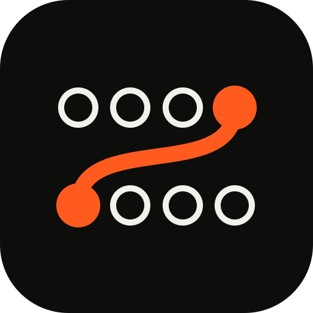

Client de API local-first para HTTP, WebSocket e SSE. As requests saem de um relay na sua máquina, as coleções são arquivos no disco, e o teclado alcança tudo.
Uma entrada, uma saída, um cabo
Patchbay é o painel de estúdio e de central telefônica onde se liga uma entrada a uma saída com um cabo, à mão. É o que o app faz com uma request: liga você a um endpoint, e o sinal volta cru. A marca é esse gesto, um patch entre dois jacks.
- Plugues e cabo
- A única cor viva da marca. No app, o mesmo laranja marca o que está em voo: a request enviando, a conexão aberta.
- Jacks livres
- Tinta em aro: branca no escuro, preta no claro. O que está disponível e ainda não foi ligado.
- Grade
- Desenhada num campo 32×32. Jacks e plugues têm o mesmo centro de grade; o cabo cai em curva, como cabo de verdade.
Marca e ícone
PB-010 marca · PB-011 favicon · PB-012 ícone de app
O favicon carrega o próprio fundo preto, então funciona em aba clara e escura. O ícone de app estende o patch para um painel de duas fileiras.
Respiro mínimo em volta da marca: um jack inteiro, 1/4 da largura.
O cabo nunca muda de cor. Em fundo claro, só os jacks viram tinta preta.
Nada de sombra, brilho ou contorno extra. A marca é chapada.
Wordmark
PB-020 wordmark · PB-021 empilhado · PB-022 lockup
Desenhado à mão como etiqueta gravada de mesa de som: traço único de 3 unidades sobre uma grade de 12×20, cantos de raio curto, caixa alta. Não é uma fonte; os arquivos são o desenho.
Cor é código
PB-100 a PB-118
O app é preto e branco. Cor só aparece quando quer dizer alguma coisa: o environment em que você está, a classe do status, o que está vivo. Métodos HTTP ficam na cor da tinta, sem cor própria, para não competir com quem carrega significado.
Tema escuro
Tema claro
PB-108 · Cabo · #ff5b1f
Reservado ao que está vivo: o botão de enviar, a request em voo, a conexão WebSocket ou SSE aberta, o patch do logo. Nunca aparece como decoração e nunca indica erro.
As fitas e o laranja mantêm o mesmo preenchimento nos dois temas. Quando a cor vira texto ou marca fina de dados sobre o papel (código de status, método vivo, carimbo, barras de frame), ela usa a versão escura acima para manter o contraste. Fitas, lâmpada e cabo mantêm o preenchimento.
Tipo
PB-200 Archivo · PB-201 Red Hat Mono
Duas famílias. Archivo cobre a interface e muda de largura conforme o papel: larga para títulos, condensada em caixa alta para etiquetas de canal. Red Hat Mono cobre tudo que é dado: código, números, headers, timecode, sempre com algarismos tabulares.
Archivo · wdth 100 · 400. Texto corrido de interface, mensagens de erro, ajuda e descrições de coleção.
| 14:03:11 | POST | 201 | 142 ms |
| 14:02:47 | GET | 200 | 38 ms |
| 14:02:05 | DELETE | 404 | 21 ms |
| 14:01:52 | POST | 503 | 1 004 ms |
Assinaturas
Seis regras que fazem o Patchbay ser reconhecível com todo o conteúdo apagado.
Fita de environment
Uma faixa de fita colorida no topo da janela diz em que environment você está. Vermelha é produção, sem ambiguidade.
Canais numerados
Toda request é um canal com número fixo e nome em etiqueta. O número é o índice: ⌘1 a ⌘9 pulam direto.
Seleção é inversão
O item ativo inverte: tinta vira fundo, fundo vira tinta. Nos dois temas. Nenhum azul de seleção, nenhum cinza de destaque.
Faixa de frames
No realtime, cada frame vira uma barra fina: altura pelo tamanho, cor pelo código. Mostra o ritmo da conexão antes de você ler uma linha.
Nada some, tudo cancela
Requests abortadas, com timeout ou que falharam ficam no histórico, carimbadas com o que aconteceu.
Cru é um estado
Pretty e Raw ficam lado a lado em todo body. Ver o que veio de verdade nunca está escondido num menu.
Escuro, claro, sistema
PB-300 escuro · PB-301 claro · PB-302 sistema
O escuro é o padrão. O claro é o mesmo mundo invertido, não outro: tinta preta sobre papel, a seleção continua sendo inversão, as fitas e o cabo não mudam. Sistema acompanha o sistema operacional ao vivo. A escolha fica nas Configurações e na command palette; use o seletor no topo desta página para ver tudo trocar.
Na tela
A primeira tela da web/ vestida no mundo, no tema escolhido no topo. Dados de exemplo.
{
"name": "Ana Ribeiro",
"email": "ana.ribeiro@exemplo.com",
"role": "bidder",
"creditLimit": 25000,
"notify": { "email": true, "push": false }
}
{
"id": "usr_9f2c41",
"name": "Ana Ribeiro",
"createdAt": "2026-10-14T14:03:11Z"
}